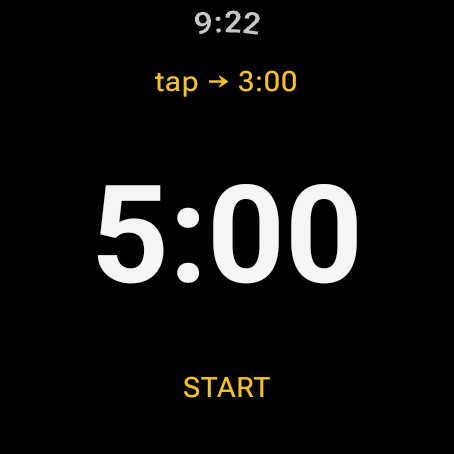
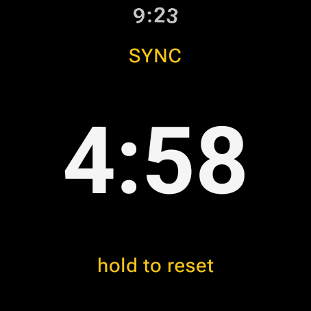
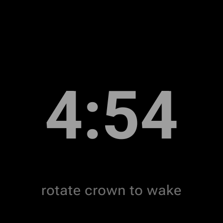
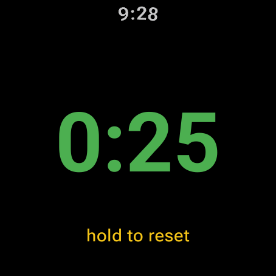
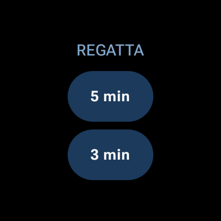

Why it exists
Generic watch timers fail on a start line: the screen falls back to the watch face mid-sequence, wet fingers can't hit small buttons, and a missed start press can't be corrected. Regatta Timer is built around the three things that matter: the display never leaves the timer, everything works wet, and sync fixes your timing at the next gun.
Features
- 5-minute (RRS 26) & 3-minute sequences — toggle with a tap while armed
- Sync to nearest minute — tap at any gun: 3:22 → 3:00, 3:40 → 4:00
- Automatic count-up after the start for elapsed race time
- Haptic signals — double buzz at 4:00, long buzz at 1:00, ticks through the last 10 s, gun blast at 0:00
- Wet-proof — countdown, display, and buzzes continue even when water forces ambient mode; half-screen touch targets; reset needs a deliberate long-press
- Quick-launch tile — swipe from the watch face, tap 5 min or 3 min, pre-armed
- Survives interruptions — an in-flight countdown or race restores at the correct time even if the app closes or the watch reboots
- Battery guard — an armed timer releases the screen after 10 idle minutes; any tap re-arms it
- Fully standalone — no companion app, no network, ~2 MB
On the wrist





🙋 Beta testers wanted
Google Play requires 12 testers for 14 days before a new personal developer account can publish. If you own a Wear OS watch and are willing to run the beta for two weeks, open an issue with your Play Store email — sailors especially welcome.
Install (sideload)
- Download the APK from the latest release.
- On the watch: Settings → System → About → tap Build number ×7, then Developer options → enable ADB debugging + Wireless debugging.
- Pair once:
adb pair <ip>:<pair-port> <code>(from “Pair new device”). - Install:
adb connect <ip>:<port>thenadb install RegattaTimer-v*.apk.
Needs Wear OS 5+. Full instructions in the README.